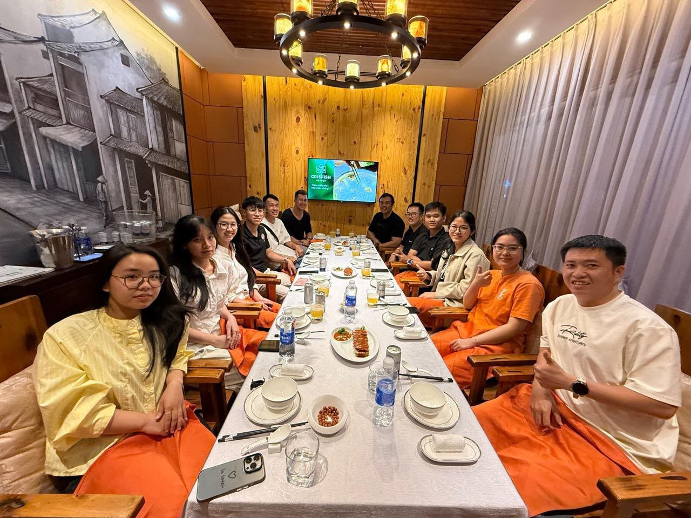
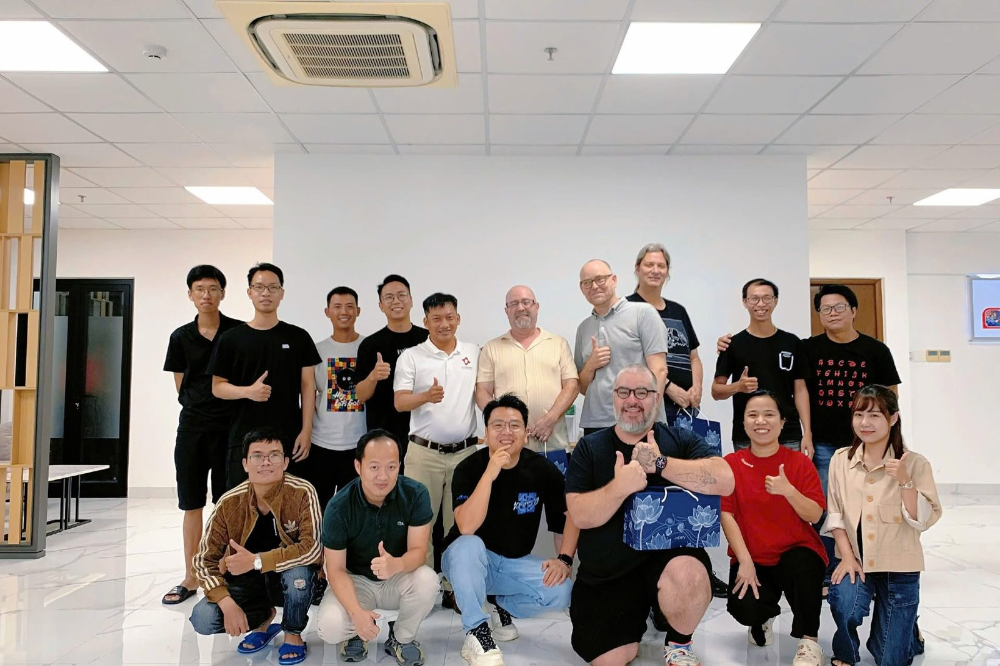
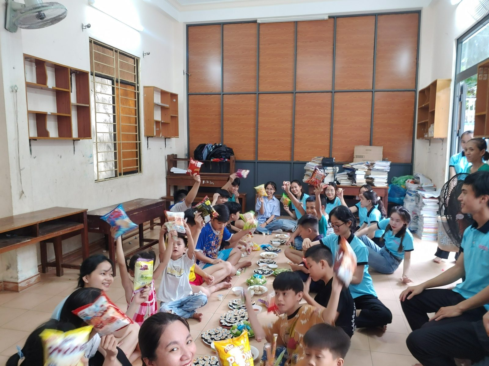
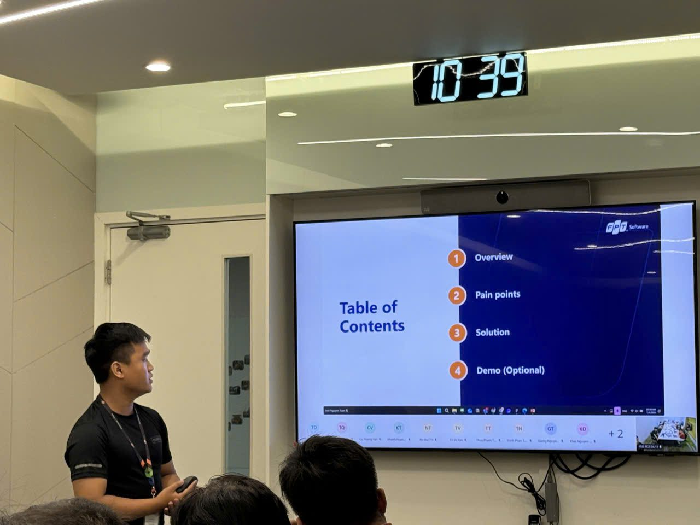
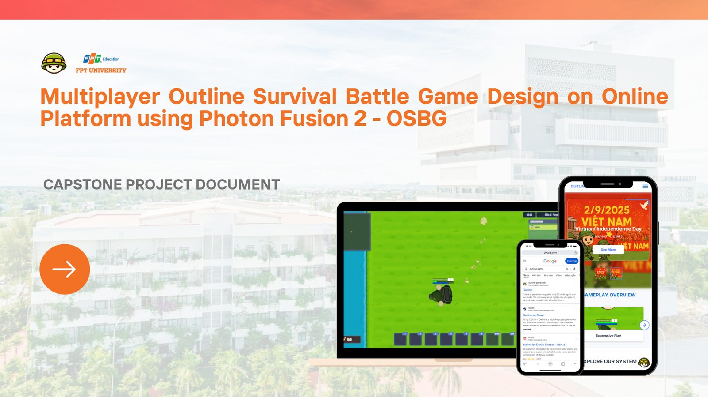

IT Project Manager & Business Analyst
Software-engineering background. I coordinate cross-functional teams and client engagements across Vietnam, Malaysia, Singapore and the US — from product research and prototypes pitched with the CEO, through requirements and sprint delivery, to UAT and release.
Bridging business, clients & engineering
Solution-oriented in evaluating business needs, solution options, scope and technical constraints — then keeping delivery honest.
Requirement & solution analysis
Clarify business needs, evaluate solution options against scope and technical constraints, write user stories, business rules and acceptance criteria.
Agile delivery
Plan sprints, allocate tasks, track backlog, risks and dependencies; keep delivery visible with milestones and KPI reporting.
Prototype, pitch & UAT
Map user flows, prototype the whole product in Figma, pitch it with leadership to clients — then run UAT and defect triage so what ships matches what was agreed.
Stakeholder alignment
Bridge clients, Product, Design and Engineering — across time zones — on scope, priorities and trade-offs.
Case studies

Rofarez — IoT security products, from prototype pitch to delivery
Owning product research, prototypes pitched with the CEO, and team & timeline management for IoT security solutions — location tracking, movement monitoring, 3D modelling — for clients across VN, MY, SG and US.

Gametamin — Lifecycle management for games with 500K–1M downloads
Running the lifecycle of live games: product direction with the CEO and marketing, market analysis, and Agile delivery across 10+ sprints.

Pacific Link Foundation — STEM programs with Intel & industry partners
Managing STEM programs, resources, schedules and partners; 100+ students trained, 1,000+ learners reached.

FPT Software — E-recording platform for the US market
Business analysis for a US e-recording / e-notarisation platform: pain points, an AI-OCR prototype for document data extraction, BOD presentation and UAT.

Outline — high-concurrency multiplayer game engine (capstone, Top 4)
Leading an Agile team of 5 to implement and optimise a real-time game simulation engine on Photon Fusion 2 — ranked Top 4 capstone project.
Recent roles
- 03/2026 – Present
IT Business Analyst & Project Coordinator
Rofarez · Da Nang- Managed a 12–15 member team and the timeline for IoT security projects (location tracking, movement monitoring, 3D modelling) with clients across VN, MY, SG and US.
- Researched technology, hardware, software and market trends to set product direction; built the prototype for each project and pitched it with the CEO to clients.
- Owned requirements, backlog, sprint execution, UAT, defects and release tracking.
- 11/2025 – 03/2026
Project Manager
Gametamin (Funtap Games) · Da Nang- Managed the lifecycle of live games with 500K–1M downloads; set product direction with the CEO and marketing, backed by market analysis.
- Managed Agile delivery across 10+ sprints — planning, task allocation, backlog tracking, blockers.
- Tracked KPIs and milestones; optimised the delivery pipeline, cutting delivery time by 15%.
- 09/2023 – 05/2025
Program Manager (STEM Programs)
Pacific Link Foundation · Da Nang- Managed STEM programs, resources, schedules and industry partners incl. Intel.
- Supported 100+ students and 1,000+ learners; delivered training and stakeholder communications.
- 05/2024 – 09/2024
Business Analyst
FPT Software · Da Nang- Business analysis for an e-recording / e-notarisation platform for the US market; analysed pain points and supported an AI-OCR prototype.
- Presented findings to BOD leaders; supported UAT and integration testing to reduce release defects.
Skills & tools
Management
- Agile / Scrum
- Scope management
- Task allocation
- Risk & dependency tracking
- KPI / OKR reporting
Business & solution analysis
- Requirements & BRD / SRS
- User stories & business rules
- Process modelling (BPMN)
- UAT & acceptance criteria
- UI prototyping
Technical
- AI / IoT / Security solutions
- Data structures
- SQL
- REST APIs
- Software engineering background
Foundation
Bachelor of Software Engineering
FPT University · 10/2021 – 10/2025
Need someone who can turn business needs into shipped software?
I'm open to IT Project Manager and Business Analyst roles — on-site in Da Nang or remote with teams in Southeast Asia and the US.